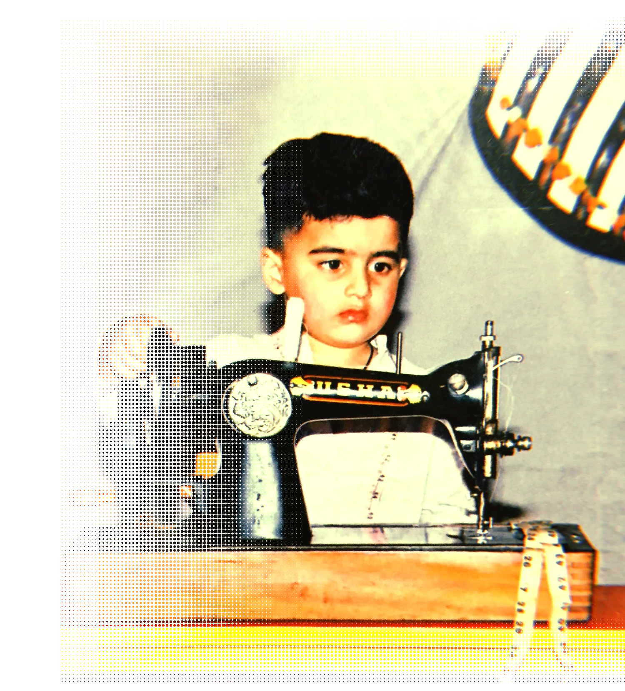
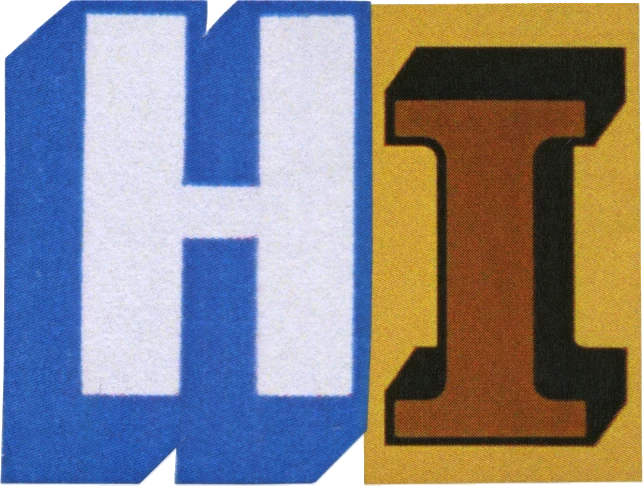
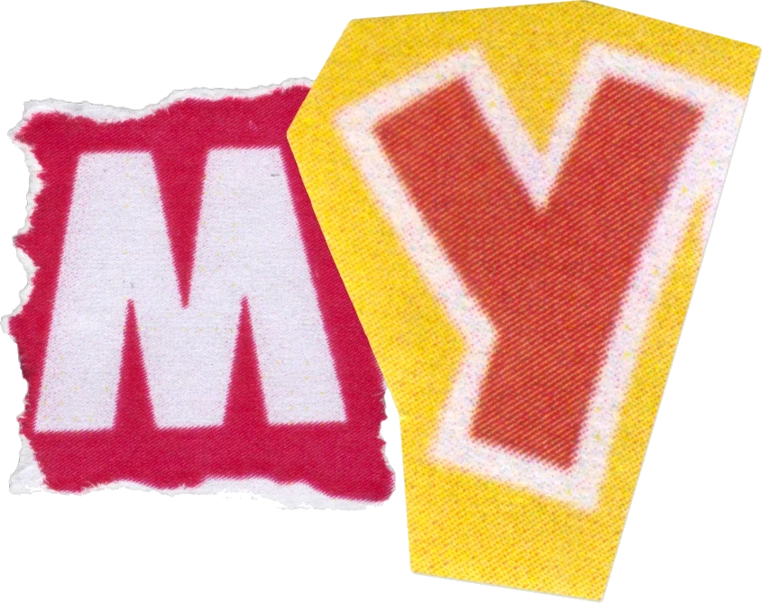
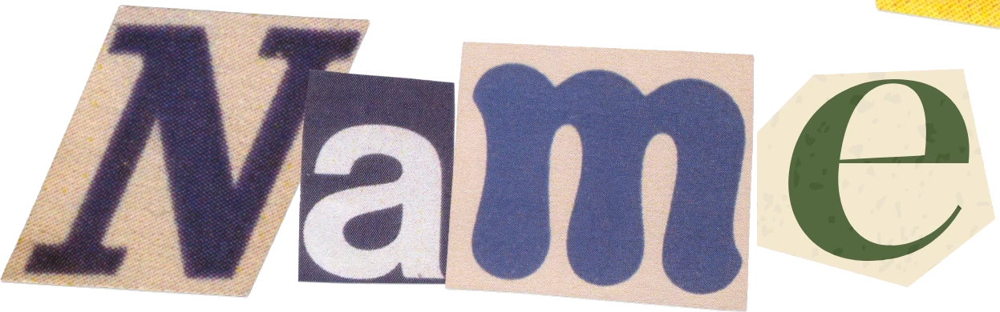
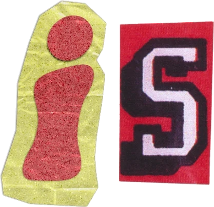
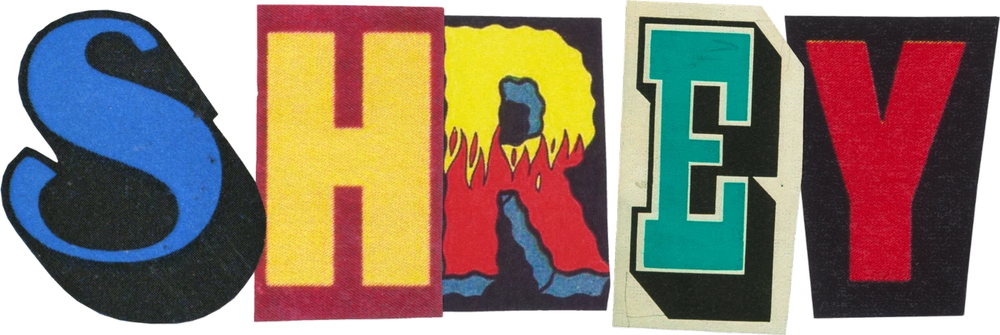

I find the idea, write the words, and build the case for why it moves a number.
What they say
A work friend we do not deserve, but need
What an absolute gem to work with
Love your attention to detail
You sure AI didn’t help you?
Love your third eye
My go-to person for AI, pop culture or ranting
[GAP: who said these. Six real quotes with no names attached read as invented — a first name, role and company against even two of them would carry the whole section.]
Brand Strategy · Creative Direction · Communications · Copywriting · Campaign Planning · AI Workflow Design · Community · Positioning
01 / Selected workThree of seven. The two that shipped, and the one that goes deepest.
02 / Ideas[GAP: one line on what Ideas is for — curiosity, point of view, the arguments worth making in public.]
[GAP: one line premise]
Not written 02[GAP: one line premise]
Not written 03[GAP: one line premise]
Not written03 / How the work happensKnowing what to do and how to do it is 80% of it. Here are the five steps that get me there — the process, not the theory of it.
Undoubtedly the first step — listen to what they actually want. Knowing what to do and how to do it is 80% of the result. So I pay attention to what the goal is, take notes like it matters, and ask until the brief makes sense from the inside out.
No preconceptions. No references that anchor me to someone else's answer. I approach every brief as if I've heard nothing relevant about the space — which lets me bring perspective from scratch. The blank canvas is not a lack of knowledge. It's a deliberate clearing.
Sharpening the axe is the fastest way to cut down the tree. This is where I spend the most time — researching until the ground feels solid, building a knowledge base specific enough to be useful and honest enough to be trusted.
Final checks. Grammar, spelling, logic. And always a variation or two — not to confuse but to give the conversation somewhere useful to go. This step is about making the decision easy for whoever receives the work.
Apply this across every piece of work — copies, ads, designs, briefs, decks. This is what makes a standard, not a project. The goal is for the process to become invisible and the output to be the only thing anyone notices.
04 / AboutI am Shrey Mehra, a specialist in generalisation who has always had one fear: being linear. I am someone who learnt Adobe After Effects in six hours for a high-stakes university presentation, and who ran GA4 analytics as an intern and presented key findings without being asked to. Also the same person who saved their company more than 200K AUD by finding a legal loophole, because an idea arrived while taking a shower — that is who I am, and that is why this exists.
With a Master of Management (Marketing) from UniMelb, I came out with First Class Honours, holding a Faculty of Business & Economics Scholarship and a 50% sponsored ride (phew, fewer education loans). This was on top of working with Compare the Market and iSelect, and serving liquor through BWS — a boy's got to fund his dreams and the city rent.
I like to connect with people. My high-school crush called me an 'empath' once and I took it seriously as a job title. I am a creative marketer who builds, a communicator who listens, and most importantly a human who knows how to blend words with numbers.
My domain has always been brand, communications, creative, public relations — anything that makes a brand perform, not performative. Transparency, authenticity, trust and loyalty drive this new generation of brand building.
Here's what my resume may or may not tell you: I bring cultural fluency from a multicultural upbringing, blended with a knack for pop culture (debate me, anytime), fashion, tech and marketing. I also paint, make lifestyle and travel edits, play badminton with friendly bets on the side, and love hosting events — someone's birthday or a full community get-together. My themes are well in demand, and so is my party punch.
What I listen to while working →[GAP: two LinkedIn recommendations, quoted in full with name, title and company. They belong here, under the ask — not in the ticker, which is for short remarks.]